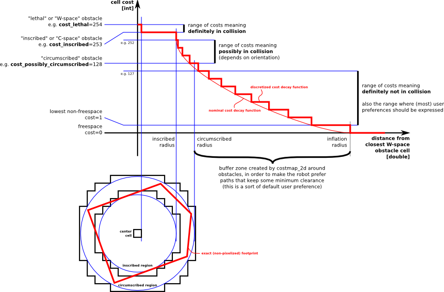

Costmap
0. 참고 문헌
1. costmap
costmap은 센서데이터를 이용한 2d 또는 3d 기반의 장애물의 코스트를 부여하여, 로봇의 충돌을 피하기 위해 설정된 맵이다. 이 코스트는 설정한 inflation_radius를 기반으로 cost를 map에 부여한다.
2. costmap_2d
costmap_2d 패키지는 costmap_2d::Costmap2DROS 객체를 이용하여 구현되며, 정적 맵에 대한 cost부여 및 동적 장애물에 대한 cost를 부여하며, 센서 높이(z방향)에 해당하는 xy 평면의 2d costmap을 구현한다. costmap_2d::Costmap2D 클래스를 통해 2차원 costmap을 저장하고 접근을 할 수 있다.
3. Marking and Clearing
costmap은 센서 데이터를 자동적으로 가져와 costmap을 구현한다. 이 때, 각 센서데이터를 이용하여 cost를 생성하거나 제거하는데 사용된다. Marking은 맵 상의 셀의 cost를 나타내는 작업이며, Clearing은 센싱되지 않는 공간에 대한 cost를 제거하는 작업이다. 만약 3차원의 센서데이터를 받는다면, 장애물의 높이에 대한 정보는 2차원 costmap에 투영된다.
4. Occupied, Free, and Unknown Space
costmap의 각 셀은 Occupied, Free, Unknown Space로 표현된다. Occupied 셀은 costmap_2d::LETHAL_OBSTACLE 객체에 할당되며, Free 셀은 costmap_2d::FREE_SPACE 객체에 할당되고, Unknwon Space 셀은 costmap_2d::NO_INFORMATION 객체에 할당된다.
5. Map Updates
costmap은 update_frequency 주기에 따라 업데이트 된다. 정해진 주기마다 센서 데이터가 들어오고, costmap의 Marking과 Clearing 작업을 하며, Occupied 셀의 적절한 cost를 부여하여 inflation_radius에 맞게 cost를 맵에 투영시킨다.
6. tf
센서 데이터를 costmap에 투영시키기 위하여 tf를 사용하는데, 이 tf 트리가 지속적으로 업데이트가 되어야 한다. 이는 global_frame, robot_base_frame, sensor_base_frame에 할당되는 tf 트리가 최신상태로 업데이트 되어야 한다. transform_tolerance 파라미터는 이러한 tf트리의 업데이트 지연 시간의 허용 시간을 설정한다.
7. Inflation

Inflation은 장애물로부터 일정 거리만큼 cost를 부여하여, 장애물이 점유함을 나타내는데, 이 cost는 장애물로부터 멀어질 수록 낮아진다. costmap의 상태를 정의하기 위해 5가지의 상태를 정의하였다.
- Lethal : 셀 안에 장애물이 있는 상태로, 로봇이 Lethal 셀 안에 있으면 장애물과 충돌하게 되는 영역이다.
- Inscribed : 셀이 실제 장애물로부터 떨어져 있는 거리가 로봇의 반경보다 작은 영역으로, 이 경우에도 로봇이 장애물과 충돌하게 되는 영역이다.
- Possibly circumscribed : Inscribed와 유사하지만, 셀이 실제 장애물로부터 떨어져 있는 거리가 로봇의 반경과 같은 영역으로, 로봇이 장애물과 충돌할 가능성이 있는 영역이다.
- Freespace : 비용이 0인 영역으로, 로봇이 장애물과 충돌하지 않는 안전한 영역이다.
- Unknown : 주어진 셀에 대하여 정보가 없음을 나타낸다.
8. Map Types
costmap_2d::Costmap2DROS 객체를 초기화하는 방법은 두 가지가 있다.
첫 번째 방법은 static map의 장애물 정보를 이용하여 초기화하는 방법이고, 두 번째 방법은 rolling_window 파라미터를 이용하는 방법으로 이 방법은 로봇 주변의 일정 크기의 local map 안의 장애물 정보만 사용하고, 그 이외의 영역의 맵에서의 장애물 정보는 삭제하는 방법이다. 첫 번째 방법은 global_costmap을 구현하는데 사용되고, 두 번째 방법은 local_costmap을 구현하는데 주로 사용된다.
9. API
9.1 Costmap2DROS
costmap_2d::Costmap2DROS 객체는 costmap_2d::Costmap2D 객체를 랩핑한 객체이다. costmap_2d::Costmap2D 객체는 C++ ROS 랩퍼로 초기화 시 지정된 ROS namespace 내에서 동작한다.
9.1.1 Subscribed Topics
- ~[name]/footprint(geometry_msgs/Polygon) : 로봇의 footprint에 대한 메세지이다.
9.1.2 Published Topics
- ~[name]/costmap(nav_msgs/OccupancyGrid) : costmap의 cost 값을 나타낸다.
- ~[name]/costmap_updates(map_msgs/OccupancyGridUpdate) : costmap의 업데이트된 map에 대한 값
- ~[name]/voxel_grid(costmap_2d/VoxelGrid) : 점유에 대한 표시를 voxel 형태로 나타내고 싶을 때 선택적으로 사용되는 메세지 형태이다.
9.1.3 Parameters
costmap_2d 위키페이지의 8.1.4 Parameters 부분을 참조하여, parameter 값 설정 시 참고하면 된다.
9.2 Layer Specifications
9.2.1 Static Map Layer
static layer는 SLAM으로 생성된 바뀌지 않는 costmap이다.
9.2.2 Obstacle Map Layer
obstacle layer는 센서 데이터로 감지된 장애물에 의해 생성된 costmap이다. ObstacleCostmapPlugin은 2차원으로 장애물 정보를 생성하는 반면, VoxelCostmapPlugin은 3차원으로 장애물 정보를 생성한다.
9.2.3 Inflation Layer
Inflation layer는 장애물 주위에 cost를 일정 범위만큼 생성한다.
9.2.4 Other Layers
pluginlib을 통해서 커스텀한 costmap layer를 만들 수 있다.